HYCOL is a color space I’ve designed which represents colors as
points in a hyperbolic geometry. Specifically, a color is represented by
its luma (aka luminance, or value), and chroma (aka chromaticity), and
chroma is understood as a point of the two-dimensional hyperbolic plane,
, while
luma lies on a half-line. HYCOL is constructed to have, to reasonable
accuracy, the following useful properties:
I want the enforcement of these principles to only really be realized within the sRGB gamut and for LCD screens, which is a small subset of the full gamut of physically realizable colors, and then also only really within the range of variation in digital displays and viewing conditions around the sRGB standard.
This colorspace is assembled by using several known insights from the literature in combination. These sources are:
It’s well known that color spaces based on addition of three primaries, like forms of RGB (the difference with sRGB is immaterial for the present discussion), are highly non-uniform and unsuitable for our purposes. CIELAB, CIELUV, CIECAM02, etc. and similar do improve considerably on these aspect as best as possible while mantaining a Euclidean metric. However, they do not account correctly for two phenomena that I think are very important for color perception in digital art: hue superimportance and the Helmholtz-Kohlrausch effect. In addition, the inaccuracy of the metric has further negative implications in the colorspace’s ability to perform blending and illumination changes in a way that matches up with the expectation of an artist and a consumer of art.
Hue superimportance is the observation that for saturated colors
variations in hue produce a perceived variation which is greater than
expected. We can make this more precise. In the wheel below, the spokes
are all of equal length, in the sense that from grey up to the rim of
the wheel we perceive roughly the same total variation as the color
saturates. This total variation is the radius of the wheel.
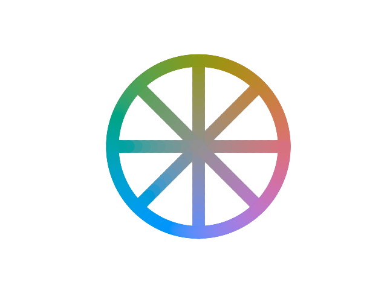
If Euclidean geometry applied, then, the circumference itself should
have a length , and we should
perceive colors to be varying around at the same speed as in the spokes,
because the literal length of the Euclidean circle on our hopefully flat
screen is supposedly proportional to that variation. Instead, if you pay
close attention, you’ll see that the change is quite a bit faster,
almost twice as fast. We could draw a more accurate wheel like this:
This fact, which is sometimes informally stated as “there are more than 360° worth of hue at high saturation”, implies that the geometry of the chroma plane is not flat, and since it’s always a super-importance and never a sub-importance, it must have negative curvature.
The HK effect is an odd perceptual phenomenon where certain very saturated colors appear brighter than they actually are. For example, the following colours in each image have all the same CIELAB luminance, which is the same as the grey in the background:
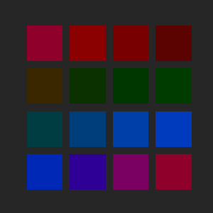 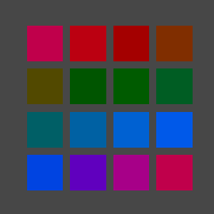  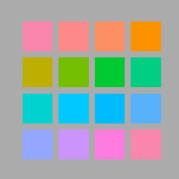
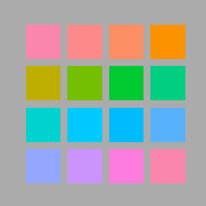
Most existing colorspaces choose not to account for the HK effect, as it can be unreliable, has psychological components, and is most importantly dependent on the quality of the observed surface.
Some saturated colors look very luminous and “pop” off the background, even though they are at the same brightness in physiological terms. The HK effect is strong and consistent for digital displays, and I found it necessary to take into account since it affects greatly the perception of values, whose control is fundamental for illustration. Failure to account for HK can result in less legible designs. It is somewhat less relevant for traditional paints, in part because they can often not achieve the same degree of purity (saturation) as some corners of additive RGB, and in part because the surface quality of paint is distinct from an LCD screen.
The HK effect increases with saturation, and it is stronger for darker luminances (an already bright color is brightened less). Its dependence on hue is very complicated and the subject of several studies, but generally it’s accepted that it’s always positive - saturation can never make a color look brighter than it objectively is, and that it’s most intense on blues, rather intense on magentas all the way to reds, and has a narrow dip in strength around yellow, being mostly non-existent for yellow hues.
Let a colour be expressed in CIELAB space as luma and chromaticity
.
First, we convert chroma to the H99 space:
Then, we perform correction of luminance to account for the Helmholtz-Kohlrausch effect, using the Pirrotta-Fairchild model. This is performed in DIN99c chroma coordinates instead of CIELAB, with minimal impact.
First we compute the strength of the HK effect according to hue, with the characteristic dip around yellow.
Then we have the corrected luma:
Finally, we perform the conversion to DIN99c luma, but employing the HK-corrected luma as input.
At this point, we have
polar DIN99c coordinates with HK-effect correction.
We then perform “hyperbolicization” by interpreting
as a geodesic radius in the hyperbolic plane:
is the radius of
curvature of the chromaticity plane in units of DIN99c chromaticity, and
thus
is the geodesic distance
of the colour from the pure grey (D65) of the same luminance. Therefore,
finally:
where the thermal angle is
such that the warmest hue (an orange-ish red) is along the positive real
axis.
lies in the disk
and represents a point in the Poincaré disk
model of the hyperbolic plane. The colour space thus defined through
with the colour
distance geometry
, or
precisely
is hypothesized to be perceptually uniform.
The final tuple constitute our
hyperbolic model of colours. Only a small fraction of the domain is
actually occupied by a given gamut. Our interest is specifically in the
sRGB gamut. We assume the standard sRGB primary specifications and the
D65 whitepoint for conversion sRGB -> CIEXYZ -> CIELAB.
The range of is from 0 (sRGB black) to 100 (sRGB
white).
lies in the unit disk, but in practice
for reasonable whitepoints most of the gamut is within
. At fixed
we have a notion of slice
gamut, which is always contained in the full
gamut, which is the region in
of all
possible values of
for colours in the sRGB gamut.
In the diagram, a few slice gamuts are displayed in the Poincaré disk model of chroma space, bounded by the outline of the full gamut.
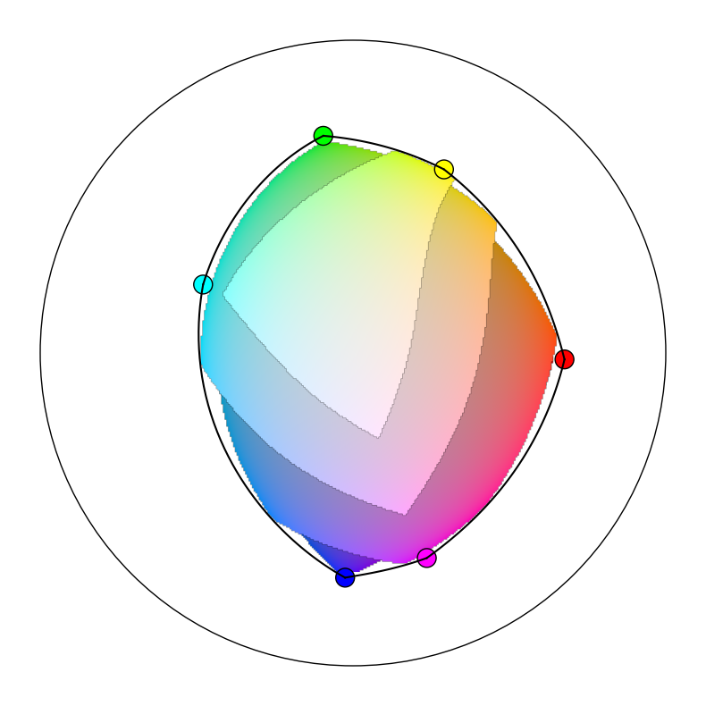
The full gamut is the shape, vaguely circular, outlined by six smooth segments. This boundary is the image of the hexagon of the sRGB primaries and secundaries in the order red -> yellow -> green -> cyan -> blue -> magenta -> red. The images of these segments are not themselves straight segments, and do bulge out considerably.
It would be misleading to display the interior of the full gamut all at once on the same plane, because no single value of luma covers it all simultaneously, and variation in luminance will affect colour difference and thus deform the metric.
The transformation CIELAB -> hyperbolic model is composed of individually invertible elements. Schematically, starting from a hyperbolic colour in the warm frame:
I propose a notion of colour temperature alternative to the traditional one based on the Planckian locus and more aligned with the subjective impression of “warmth”. Temperature of individual colours, not merely lights, is artistically relevant. Warmer colours are perceived to be closer, moving outside the screen towards the viewer, and more abstractly have a quality of “intimacy”; conversely, cooler colours recede.
The first assumption that I make is that temperature only depends on chroma, not luma (if both are properly constructed). This means that the isotherms, the sets of colors of equal temperature, are curves in the hyperbolic chroma plane. What kind of curves? It would be preferable for them to be a more symmetric and simple family of curves, or at least be approximately described as such.
Let’s begin by identifying the “warmest hue”, which must be properly
defined to hold at any given saturation. We observe that such warmest
hue is very clearly perceived to be an orangeish-red, or
vermillion. Blood red and carrot on either side, at
equal saturation, are sharply seen to be colder. Consider the hyperbolic
line from D65 white to vermillion, extended backwards as well into sky
blue. We’ll call this the thermal axis, and HYCOL has
been defined so that this is conveniently just the horizontal line of
.
It would be reasonable to define the temperature for colors on the
thermal axis as the signed distance from white, and in fact we’ll see in
a bit that this is sound. If we do, then translations along the thermal
axis are just simply shifts in temperature.
Then isotherms must meet the thermal axis at right angle, and their temperature is that of the point of intersection. If they are sufficiently symmetric, so curves of constant curvature, then they are a pencil of generalized circles orthogonal to the thermal axis; namely, they could be any of these:
wip
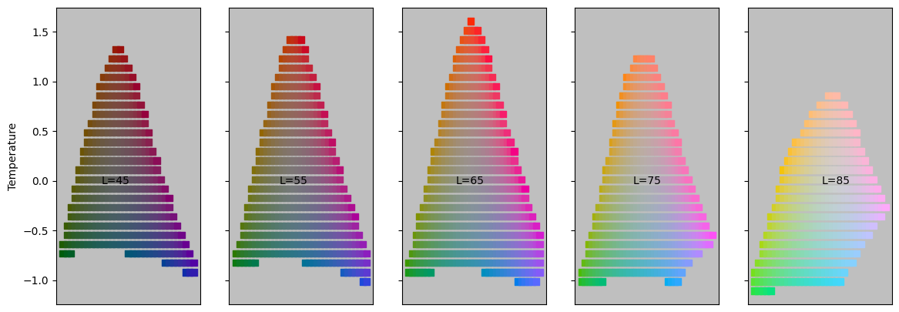
wip: rewrite for pandoc markdown
The fundamental object that the theory is based on is the geodesic gradient, which is the “optimal” interpolation between two colours (the vertices), in the sense that it involves the least possible perceived total colour variation and that such perceived change occurs at constant speed. This is geometrically the geodesic segment between two points, which is the shortest path and, by necessity, of curvature zero.
When a geodesic gradient stretches between two vertices with
different luminance, the luminance changes at the same rate that the
chromaticity does, relative to the total. For example, when we are of the way through from
to
, or equivalently we are performing a
blend of
and
with weights
and
respectively, the luminance
will be
, and the chromaticity will be at a
distance along the path in the same proportion:
. This follows from the fact that the colour
metric is a product metric, and defines uniquely the geodesic gradient
between any two colours, or equivalently the weighted blend between two
colours
,
with weights
such that
.
For the computational aspect, there is a closed form expression for such an interpolation as the hyperbolic equivalent of the SLERP operation for spherical geometry, sometimes called HLERP. However this is of limited use, since the generalization to a weighted blend of more than two colours, which we do require extensively, has no closed form solution anyway.
We are interested in blending several colours with weights
that sum to one:
. (We will only need
, where HLERP is barycentric
coordinates over a triangle, but no simplification is offered compared
to the general case). Of course, we will blend lumas
and chromas
separately with the same weights. For
lumas, we just perform a regular linear interpolation. For hyperbolic
chromas, defining a canonical weighted average in an arbitrary space is
generally impossible, but there is a consistent way to do so for
points
due to its high degree of symmetry.
We impose the requirement that the n-fold HLERP reduces to the two-point geodesic HLERP when all the weights but two vanish:
for triangles, for examples, this means that blends where one vertex has weight zero reduce to the blend between the remaining two vertices.
The following definition successfully generalizes the Euclidean lerp
to both spherical and hyperbolic geometry. The weighted average
is the unique point that minimizes the objective function:
This optimization must be performed numerically for . We employ a version
of gradient descent, though care should be applied to understand the
nature of this gradient as a mathematical object. First, let’s notate by
the Moebius
transformation that sends
to
translating along the geodesic segment
from
to
, which is explicitly
This matrix embodies the notion of translating in the direction and
distance of “in the simplest way possible”,
considering the difficulty of being unable to compare directions at
different points.
We can then define the positions of the vertices relative to by performing the inverse
transformation:
Of course, . Then, we can define the “logarithm” of such
relative position as a complex number with the same phase and norm equal
to the distance:
The logarithm is a tangent vector which belongs to the tangent space
to at the
origin, which is just
, a vector
space where weighted averages are well defined. The gradient is
recognized to be
To perform a gradient descent iteration, we need to properly
generalize the operation of (small) displacement . We understand we really need to transform
by the exponential of the tangent
vector
. We define the
“exponential” to invert the “logarithm”:
And finally the iteration step is as follows:
We employ the following algorithm with linear convergence, described directly in the Poincaré disk for convenience:
Complementary colors is one of the most inconsistent and contradictory topics in color theory. This is inclusive both of the meaning, purpose and effect of complementary colors, and specifically of which colors should be complementary with which.
I argue that this is in fact a manifestation of the notion of complementarity being relative; this relativity fortuitously happens to be in fact mathematically identical to special relativity in physics, since the Lorentz group is the isometry group of the hyperbolic plane. We speak of complementarity only with respect to a center, or whitepoint, which in turn defines a reference frame. Complementarity in one frame is distinct from that in another.
First of all, complementarity involves exclusively the chroma component, and it is independent from the luma.
Two chromaticities are complementary in a given frame if the (hyperbolic) straight segment between them passes through the center. Equivalently, we can define hue as the angle from the center, assuming the thermal axis from the center to the ideal warm point as 0°, and then complementary colours have hues 180° apart. Hue is frame dependent.
The D65 whitepoint, the “true” grey, defines a frame which is related the physiology of human vision. Complementaries in this frame are opponents of the opponent process theory. Afterimages of a certain color are in its opponent complementary, for example in this well-known illusion:
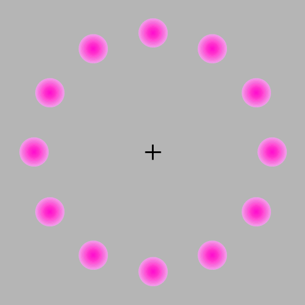
Staring at the cross for enough time makes a green dot appear in the moving vacancy - this is because green is the opponent complementary to magenta, because they are collinear with the grey of the background.
However, for art the opponent pairs are less useful. There is a notion of complementarity, which we will call harmonic complementarity, in which complementary colors are those that clash and are perceived to be in a messy and repulsive relationship. Harmonic complementaries are unclear in their intent, displeasing, and have a characteristic sickly shimmer on their boundary. This impression is worse at higher saturation, but it is in fact always present.
The prototypical clashing pair is red and green: . Note that this is different from the D65 frame, since the opponent complementary of red is cyan, and for green is, as seen, magenta.
I have performed an experiment and acquired data to precisely determine which pairs of colors are harmonic complementaries. If we draw the segments between them, they roughly appear to be passing through a single point:
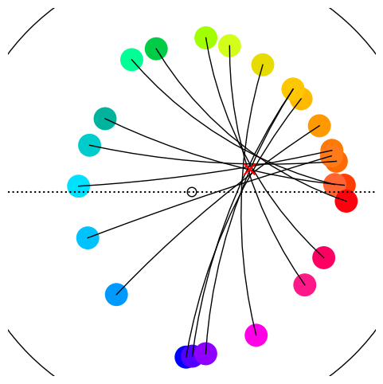
This harmonic center, which I’ve fixed at is a
decidedly orange-ish chromaticity which happens to be, roughly, that of
human skin (of various ethnicities). It looks like this at various
lumas
The significance of a match with skin tones is probably a rabbit hole best left for spare afternoons. Still, we can term this the skin center, defining a skin frame. For some reason, harmony is relative to the skin frame. After transforming (“boosting”) to the skin frame, the definition of hues and their spacing is completely different from D65. These new, harmonic hues shrink the space dedicated to cool colors and expand the accuracy on warm hues, due to the inherently warm bias of the whitepoint.
In the skin frame, D65 itself is not neutral anymore, and it is perceived to have a blue hue, with mild saturation. This means that, as such, it really is harmonic complementary to orange, and this is true at all luma. We can therefore conclude, somewhat humorously but with reasonable motivation, that white is complementary to orange, and they will indeed clash if the alignment is correct.
The division of the color wheel in the skin frame into a certain number of equal spokes is completely arbitrary, and arguably unnecessary since the geometric picture is available; nevertheless, having a discrete structure will greatly improve practical use, even if there is a small loss of generality. So far, the best choice I’ve found is to divide hues into 14 equal steps.
For the skin frame hues in the 14-tone system I’ve chosen the following naming convention, using lowercase latin letters to avoid confusion with pre-existing systems:
| v | Vermillion | Warm, orange-ish red |
| c | Carrot | Reddish orange |
| o | Orange | Orange fruit, cold orange |
| h | Honey | Warm, orange-ish yellow |
| y | Yellow | Lemon, cold yellow |
| x | Chartreuse | Pear, yellow-green |
| g | Green | Slightly cold green |
| t | Teal | Bluish green |
| n | Noon | Noon sky, greenish blue |
| b | Blue | Late afternoon sky |
| l | Lavender | Bluish violet |
| m | Magenta | Cold pinks |
| p | Pink | Bordeaux, warm pinks, violet-ish red |
| r | Red | Blood red |
The diagram below depicts the extents of the sRGB gamut in the skin frame with marked hue spokes, and the max-saturation colors of each hue. (For this guide we will use more subdued representative tones since the wild fluctuations in luma and saturation on the gamut boundary can be confusing). Also marked, with greek letters, the RGB primaries and secundaries, displaying misalignment with the new categories (e.g., primary red is decidedly warm).
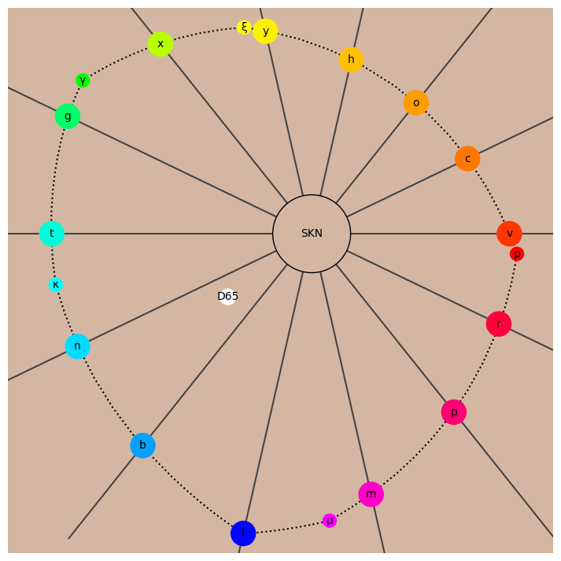
Observe that D65 greys, including full black and full white, are exactly halfway between n and b, meaning their complementary axis is as far as possible from o and c. This is convenient for digital art as it allows the use of full black and white while minimizing the risk of clashing with intermediate tones, if o and c are preferred.
wip
Harmonic coloring is based on two principles:
These are forces in opposition: clearly complementary colors have the greatest contrast, yet the best choice for a dichromatic piece is an interval which is as large as possible without being dissonant. Since complementaries are separated by 7 steps, this optimal choice is a 6-step interval we call a resonant. Every tone has two resonants going clockwise or counter-clockwise. This is the 14 tones connected by resonance; since 6 is even (and so is 14), resonances have the same parity, thus there is an even cycle of resonants voygnlp and an odd cycle chxtbmr, analogous to the circle of fifths in music.
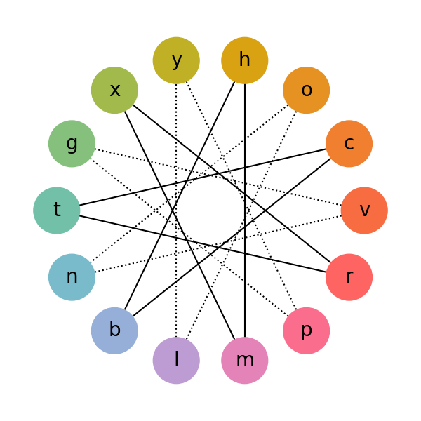
Working only with resonants is quite boring and static; some variation in relationship between the hues can expand the emotional range of a piece. While the contrast is lesser, an interval of 5 steps is also quite pleasant, and it could be called a semi-resonant. Here is all the possible intervals, sorted by increasing dissonance, with my interpretation:
| N | Interval | Quality | Left |
|---|---|---|---|
| 0 | Unison | Complex (see below) | |
| 6 | Resonant | Mutual emphasis: maximum contrast without complementarity | |
| 5 | Semi-resonant | Similar to resonant, but with lesser contrast | |
| 3 | Adjoint | Adjoint tones work together towards the same goal | |
| 2 | Major Analogous | Slightly dissonant: complementary of semi-resonant | |
| 4 | Mediant | Odd and disorienting | |
| 1 | Minor Analogous | Dissonant: complementary of resonant | |
| 7 | Complementary | Highly displeasing |
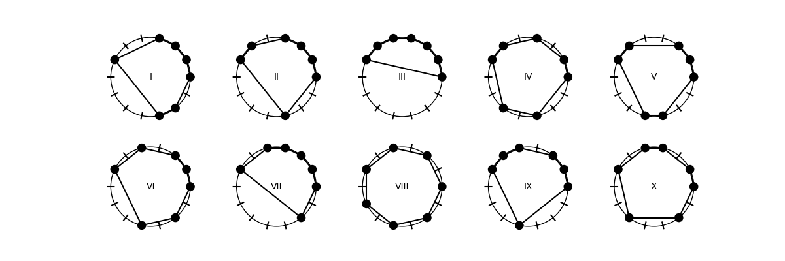
wip
The simplest non-trivial palette structure is the triangular field between three vertices, one of which is marked as the key, and the other two for the base. The key is the chromatic focal point of the piece and the purpose of the triad is to emphasize the key by establishing a context in which it is intensified by contrast.
The triad should be thought of as an arrow pointing to the key, it is inherently a directed and dynamical structure. The motion is from base to key, but also background to foreground, general to specific, and it is the physical guided motion of the eye as it absorbs the piece.
A triad can certainly not have any complementaries among its vertices. In addition, it should envelop the harmonic center, so the base vertices should be on opposite sides of the complementary to the key. Finally, since the key should be emphasized, the interval of the base must be smaller than those from the base to the key. This only leaves four possibilities:
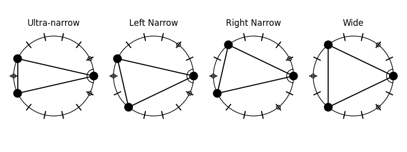
The key is positioned on the right, and I have further marked tones that have been excluded due to complementarity.
The ultra-narrow triad is functional but has undesirable properties: the base is dissonant and the range is small. This palette is difficult to extend as further fields quickly drown out the main one. In addition, the symmetry with respect to the key axis makes it rather static.
The narrow triads are similar, but not identical, to Fletcher’s. They are asymmetric and come in two chiral forms. The intervals are varied and harmonious: a resonant, a semi-resonant, and an adjoint. These palettes exhalt the key efficiently while also incorporating a great degree of playful secondary motion. They provide the range for rather surprising and dynamic artwork, and have the greater potential to be extended. Generally narrow triads are the most promising choice for main fields.
Wide triads are unweildy. The primality of the key is extremely weak (in fact, in the 12 tone system these are equilateral triangles), the base interval is a mediant which is generally unpleasant or uncertain in character, and finally there is symmetry. The range is vast, but this is potentially at the detriment of the piece.
Given what we know about harmony so far, the abstract color wheel with analogous tones adjacent is not a particularly convenient representation. We can lift a page from music theory again and construct a two-dimensional lattice (tonnetz) where each edge represents a particular consonant interval:
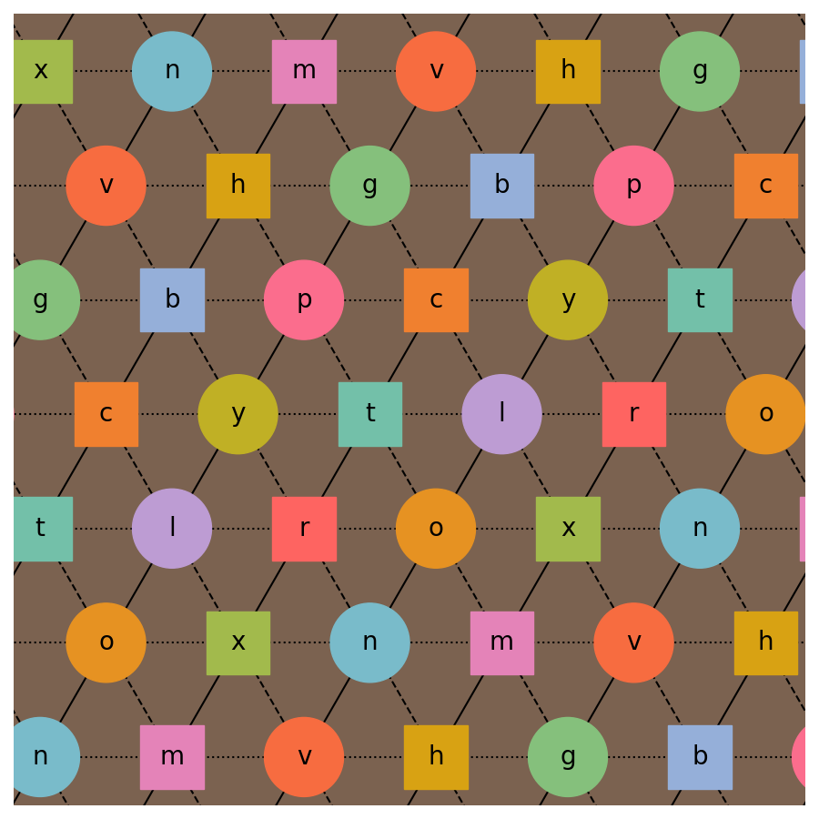
A portion of a Neo-Riemannian style lattice for the 14-tone system. The lattice is periodic. Dotted lines represent adjoints, solid line are resonants, and dashed lines are semi-resonants. Every triangle is a narrow triad, and each tone is the key for the triads directly above and below it.
For example, y is the bottom vertex of the narrow triad y/b/p, with y as the key, p as the base resonant, and b as the semi-resonant. However, it shares an edge with the narrow triad p/y/t, with now p as the key, y as the base resonant, and t as the semi-resonant. Joined together, the two triads assemble in a four-tone object including y,b,p and t, and with the new interval b-t which is a major analogous.
The tonnetz also places at maximum distance colors which are complementaries or mediants, providing a further rationalization of why they’re perceived as displeasing – they are “distant” in terms of the number of resonant steps that must be taken to bring one to the other. In this picture (which is to be understood as more poetic than literal), r and g are offending to the eye because the eye is invited to imagine, for example, that the relationship of g to r is that g is resonant to p, which is semi-resonant to t, which is resonant to r, but also the inverted path r -> x -> v -> g. The complexity and ambiguity of the relationship is too much for immediate comprehension, as is the case, for example for r and t.
wip
wip
Parametrized by complex in the unit disk
. This is a
conformal model. The conformal boundary
is composed of all
ideal points.
The representation of geometric objects are as such: - Lines: generalized circular arcs which meet the boundary at right angles. - Circles: Euclidean circles contained entirely within the disk. - Horocycles: Euclidean circles tangent to the boundary. - Hypercycles: generalized circular arcs that meet the boundary at non-right angles.
Angles are accurately represented.
The metric is
Isometries are given by Moebius transformations in , so of the
form
where .
This is actually a double cover, so it’s necessary to quotient by the
centre
. It can
equivalently be described as the unit split-quaternion
where
,
,
, and the
split-quaternion norm is
.
Parametrized by complex with
. This is a conformal model. The conformal
boundary is given by the real axis
compactified
with the one point
.
The representation of geometric objects are as such: - Lines:
generalized circular arcs which meet the boundary at right angles.
(Including vertical lines which are understood to meet at 90°) -
Circles: Euclidean circles contained entirely within the disk. -
Horocycles: Euclidean circles tangent to the boundary. (Including
horizontal lines) - Hypercycles: generalized circular arcs that meet the
boundary at non-right angles. (Including any lines not horizontal nor
vertical)
The metric is
Isometries are given by real Moebius transformations in , so of the form
where are real and
, again with
quotient of the overall sign.
Also known as the Riemann Sphere’s Cayley transform.
This is assuming the convention of ,
.